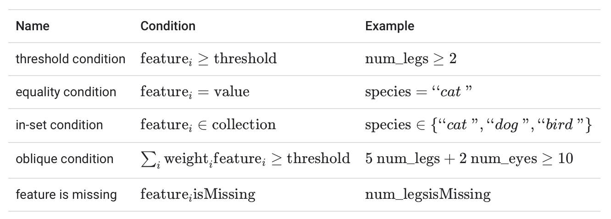

Decision Forest
Machine Learning Appetizer Course
|
Tan Jun Xian |
Joshua Lim Chiew Khoon |


1. Attendance Code
2. Slido
3. Interactions
Decision
Forest
Decision forest models are composed of decision trees.
A decision tree is a model composed of a collection of "questions" organized hierarchically in the shape of a tree. The questions are usually called a condition, a split, or a test.

axis-aligned
argentina_score ≥ 3oblique
argentina_score ≥ france_scoreaxis-aligned
oblique
Binary vs. non-binary conditions

Binary Conditions
Growing a Decision Tree
def train_decision_tree(training_examples):
root = create_root() # Create a decision tree with a single empty root.
grow_tree(root, training_examples) # Grow the root node.
return root
def grow_tree(node, examples):
condition = find_best_condition(examples) # Find the best condition.
if condition is None:
# No satisfying conditions were found, therefore the grow of the branch stops.
set_leaf_prediction(node, examples)
return
# Create two childrens for the node.
positive_child, negative_child = split_node(node, condition)
# List the training examples used by each children.
negative_examples = [example for example in examples if not condition(example)]
positive_examples = [example for example in examples if condition(example)]
# Continue the growth of the children.
grow_tree(negative_child, negative_examples)
grow_tree(positive_child, positive_examples)Roses are red
Cristiano Ronaldo
What time is it?
TIme to check the slido
Splitter
The routine responsible for finding the best condition
- Information gain and Gini are commonly used for classification.
- Mean squared error is commonly used for regression.
Entropy is the measure of randomness or unpredictability in the dataset

Information Gain is the measure of decrease in entropy after the dataset is split.
There are many splitter algorithms, each with varying support for:
- The type of features; for example, numerical, categorical, text
- The task; for example, binary classification, multi-class classification, regression
- The type of condition; for example, threshold condition, in-set condition, oblique condition
- The regularization criteria; for example, exact or approximated splitters for threshold conditions

- Set a maximum depth: Prevent decision trees from growing past a maximum depth, such as 10.
- Set a minimum number of examples in leaf: A leaf with less than a certain number of examples will not be considered for splitting.
to limit Overfitting.


to limit Overfitting.
Decision trees also have specific variable importances, such as:
- The sum of the split score with a given variable.
- The number of nodes with a given variable.
- The average depth of the first occurrence of a feature across all the tree paths.
Variable importances can differ by qualities such as:
- semantics
- scale
- properties
Furthermore, variable importances provide different types of information about:
- the model
- the dataset
- the training process
A decision forest is a generic term to describe models made of multiple decision trees. The prediction of a decision forest is the aggregation of the predictions of its decision trees.
Random Forest